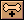
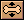
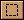

教程 4 - 骨骼
介绍
这个教程基于前面的两个教程，将教会你如何给一个对象增加骨骼。你可以使用你在教程3中制作的作品，你也可以直接在Moho目录中的Turorials目录中打开名为 "Tutorial3" 的文件使用。
骨骼是Moho中一种使制作动画变得十分容易的重要工具。你可以这样理解骨骼和绘制的图形之间的关系：你在前两个教程中绘制的图形好比软橡胶，而你将要制作的骨骼好像是穿在这些软橡胶中的硬金属线，你可以通过控制这些金属线来控制你绘制的图形对象比如移动或者形变等。骨骼在最后输出动画中是看不见的，它仅仅在制作动画过程中起到一个控制工具的作用。
不过在Moho中制作动画并不是必须依赖骨骼系统，骨骼比较适合制作我们在这个教程和下一个教程中的动画形式，在Moho中还有一些其它的方法来制作动画。当你使用了一段时间Moho，掌握了一定的经验的时候，你就会知道什么时候该用骨骼，而什么时候不需要。
导入一个对象
运行Moho，打开上一个教程中制作的文件。
当你创建一个Moho工程的时候，有时你可能想利用你以前制作过的对象。方法很简单，我们这里将利用这种方法给我们的作品中增加一个人物。从菜单中选择 File->Insert Layer... 命令。在弹出的窗口中切换到Moho所在的目录下的Tutorials目录，选择名为"TutorialExtras"的文件，按下确定按钮。会弹出一个对话框，在这里你可以选择你想从这个文件中导入的层，如下图：
在对话框的左部的列表中选择名为"Frank"的层，你将看到对话框的右边部分出现了这个叫做 Frank 的小人的预览，按下OK按钮确定。你的作品中会增加一个新的层。这个层就是 TutorialExtras 文件中的 Frank 层的一个拷贝。Frank 已经正确地绘制并填充完成了，你可以在菜单中选择 File->Render 来看看输出效果。
添加骨骼
我们来给 Frank 添加骨骼，以便我们制作他的动画。在层面板中点击新建层按钮 ，在弹出的菜单中选择"Bone Layer"。把这个新层改名为 "Skeleton"。然后拖动 Frank 层到这个新建的骨骼层下，使 Frank 层成为骨骼层的"子层"。(金月亮插话：这里的操作可能有难度，我教给你一个简单的方法，你按住 Frank 层，慢慢向上移动鼠标，当看到 "Skeleton" 层底边缘变成红线时，松开鼠标就行了)你可以看到，Franck层缩进去一块，说明它已经成为 "Skeleton" 的子层了，然后选中 "Skeleton" 层，如下图：
在工作区的左上角点击骨骼标签，切换到骨骼编辑模式。
确认已经选中了 "Skeleton" 层，按住Alt键同时点击层面板中 "Skeleton" 层后方的那个小眼珠图标，这样就可以暂时隐藏除了 "Skeleton" 层以外的其它层，你可以看到其它层后面的小眼珠图标消失了，同时在工作区中这些层都看不到了。每个层后的小眼珠图标是否显示就表示这个层是否可见。
使用以前介绍过的缩放画面工具和移动画面工具，使 Frank 显示到屏幕当中，如下图：
从工具条中选择增加骨骼工具  ，如下图一样操作鼠标，给Frank加上第一块骨骼。
这块骨骼是主控制骨骼，你可以把它想象成为 Frank 的脊柱，如下图：
如下图所示再增加三块骨骼，注意，一定要按照从上到下的顺序创建：大腿，小腿，脚。
当一块骨骼被选择的时候，它会以高光(红色)显示，当你增加一块新骨骼时，这块新骨骼会自动成为当前被选中的骨骼的子骨骼。骨骼的父子关系是这样的：当子骨骼移动或者旋转时，它对它的父骨骼不会产生影响，而当父骨骼移动时，他的所有子骨骼会跟着它一同移动。这就是为什么要按照大腿，小腿和脚的顺序来创建骨骼，脚骨骼是小腿的子骨骼，小腿骨骼是大腿骨骼的子骨骼，而大腿骨骼是最开始创建的脊椎骨的子骨骼。(至少在 Frank 的身体中是这样)
 当一块骨骼被选择的时候，它以红色显示，而它的父骨骼以亮蓝色显示。这种显示方法有助于你察看骨骼的连接：有时你可能会将骨骼之间的连接搞错，而选择一块骨骼后，察看显示为蓝色的骨骼(即它的父骨骼)，这样你就可以知道骨骼之间的连接是不是如你所愿。
当一块骨骼被选择的时候，它以红色显示，而它的父骨骼以亮蓝色显示。这种显示方法有助于你察看骨骼的连接：有时你可能会将骨骼之间的连接搞错，而选择一块骨骼后，察看显示为蓝色的骨骼(即它的父骨骼)，这样你就可以知道骨骼之间的连接是不是如你所愿。
好，我们来给另外一条腿也加上骨骼，不过我们需要先选择脊椎骨，以便使新增加的骨骼也连接到脊椎骨上(否则就会把左边的大腿骨连接到右边的脚上去了，你不希望如此吧^_^)，选择选取骨骼工具 并点击脊椎骨选择它。然后再次选择增加骨骼工具 ，如下图所示给另外一条腿增加三块骨骼。
测试骨骼
在骨骼编辑模式中，有一个工具可以让你测试你的骨骼系统是否连接正确，工作正常。下面我们就来测试一下，选择测试骨骼工具  ，随便点击并拖动某块骨骼，多试几块骨骼，看看会有什么效果。
你会发现，Frank 并没有动，只是骨骼在动。下一步我们就来将 Frank 身上的部分绑定到相对应的骨骼上。
不必担心骨骼的位置变化，因为测试骨骼工具并没有真正改变骨骼的位置。选择选取骨骼工具 ，你会发现所有的骨骼都恢复到其原始位置了。
将节点绑定到骨骼
在层面板中点击 Frank 层选择它。注意虽然现在仍然在骨骼编辑模式下，但是你是在编辑 Frank 层，而不是 Skeleton 层。这个差别很重要：你需要在骨骼层(Bone layer)中增加骨骼，而在矢量层(Vector layer)中把对象连接到骨骼上。
选择选取骨骼工具 ，然后点击脊椎骨选择它。从菜单中选择 Edit->Select All 以选取全部节点。最后，按下空格键即可将选择的节点(这里是全部节点)绑定到选择的骨骼(这里是脊椎骨)上。
然后点击右边的大腿骨以选择它，选择连接节点工具  ，选中如下图中所示为红色的节点，按下空格键将这些节点绑定到右边大腿骨上。
接下来，选择选取骨骼工具，点击小腿骨以选择它，选择连接节点工具，选中如下图中所示为红色的节点，按下空格键把它们绑定到小腿骨上。注意不要选错了，如果多选了的话，使用连接节点工具再次点击多选了的节点就可以取消对它的选择。空格键的功能就是将选中的节点绑定到选中的骨骼上。
按照下图，分别选择脚骨和对应的节点，按下空格键把它们绑定到一起。
Frank 的另一条腿其实就是第一条腿的镜像，按照上面的说明，使用选取骨骼工具 和连接节点工具 将节点绑定到对应的骨骼上。记住，必须在将正确的节点和骨骼都选中后，才能按下空格键将它们绑定到一起。
再次测试
将所有的节点和骨骼都绑定完成后，最好再来测试一次，以确认所有的连接正确无误。选择测试骨骼工具 ，然后在Frank的脚踝部分点击并拖动鼠标，如果所有设置正确的话，Frank将可以变成如下图所示的样子：
你可以尝试把Frank变成不同的姿态，以仔细体会骨骼的操作。下一个教程 将讲解动画编辑模式，你将学习如何让对象真正动起来。